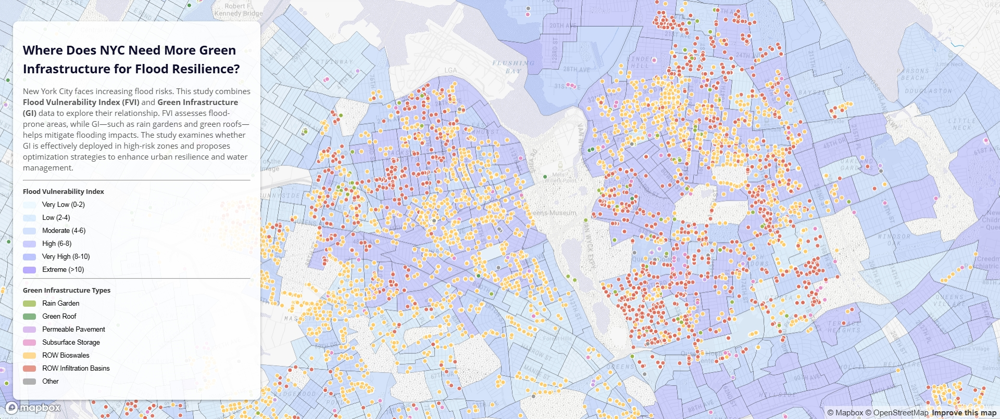
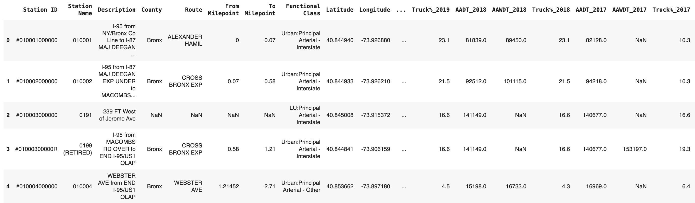

News Web - Warehouses Next Door

Web Map 02 - Where Does NYC Need More Green Infrastructure for Flood Resilience?

Web Map 06 - Charts and Graphs

Mobile Brickman – A home designed for mobile workers

Historic Building Renovation – The Yardstick of Time

Hospital and nursing home complex for the elderly

Enclave and studentification Study in University of Glasgow

Exhibition space in University of Glasgow

Reuse of leftover space under viaduct

Co-development of worker alliances and enterprise alliances